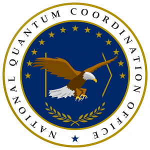
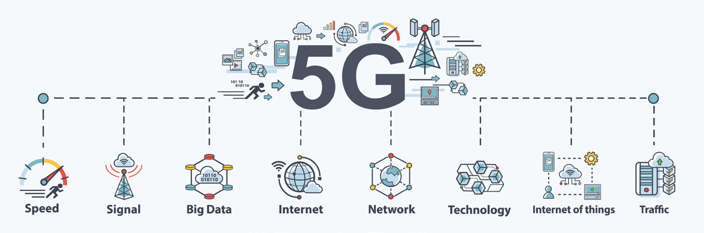
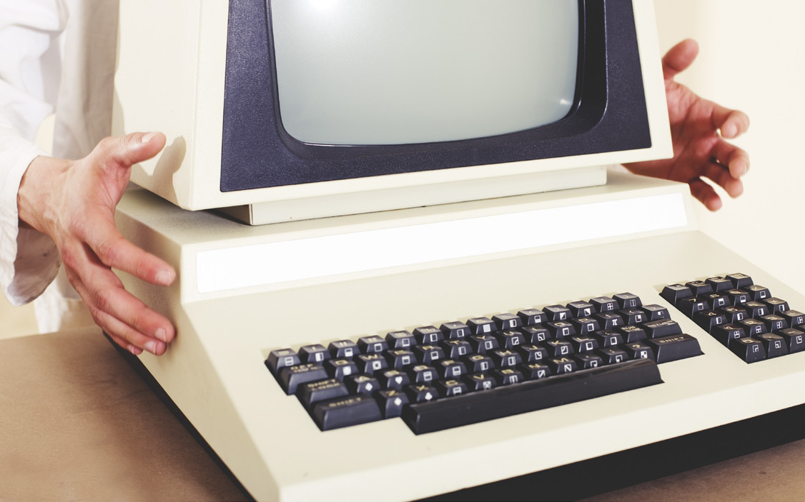
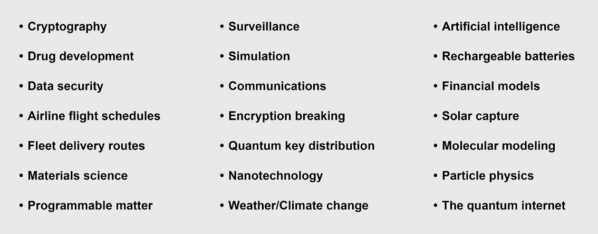

Forecasting any frontier technology is a humbling exercise, and quantum computing is no exception. The first edition of this book, written in 2021, looked ahead to a field still defined by promises and proof-of-concept demonstrations. Five years later much of that promise has hardened into roadmaps, funded national programs, and chips that correct their own errors. This chapter updates the outlook. It surveys the expected impact of quantum technology, the trends shaping the industry through 2026, the race to build a quantum-qualified workforce, the tension between global collaboration and national security, and the applications most likely to matter first.
A useful frame for the whole chapter: quantum computing is no longer a question of whether the physics works. It is a question of engineering, economics, and timing. The science is largely settled. The hard problems now are scaling qubits, suppressing errors, training people, and identifying the commercial problems where a quantum machine actually pays for itself.
If there was ever doubt about the strategic weight governments place on quantum technology, the funding tells the story. In 2018 the United States passed the bipartisan National Quantum Initiative Act, which committed roughly $1.2 billion over five years, established the National Quantum Coordination Office (NQCO) inside the Office of Science and Technology Policy, created a series of Quantum Information Science Research Centers at the Department of Energy national labs, and stood up the Quantum Economic Development Consortium (QED-C) to push commercialization. That act framed quantum as a matter of national competitiveness, not just scientific curiosity.

The momentum has only accelerated. By 2025, total announced public investment in quantum technology worldwide had passed $40 billion, with the Asia-Pacific region accounting for close to half of it [1]. China established a national venture fund reported at roughly 1 trillion yuan for frontier technologies including quantum [1]. Japan committed several billion dollars, Europe advanced its Quantum Flagship and a cross-border "Quantum Valley" strategy, and in the United States the proposed DOE Quantum Leadership Act of 2025 sought $2.5 billion across fiscal years 2026 through 2030 [1]. Verify before publication. The exact figures move quarter to quarter, but the direction is unmistakable: quantum is being treated as critical infrastructure.
Why this intensity of spending? Part of the answer is defensive. A sufficiently large, error-corrected quantum computer could break the public-key cryptography (RSA and elliptic-curve schemes) that secures most of today's internet, banking, and government communications. That threat reshaped policy. Congress directed the Pentagon to adopt quantum-resilient practices through successive Defense Authorization Acts, and the National Institute of Standards and Technology (NIST) ran a multi-year competition to standardize post-quantum cryptography (PQC). In August 2024 NIST finalized its first three PQC standards: FIPS 203 (ML-KEM, for key establishment), FIPS 204 (ML-DSA, for digital signatures), and FIPS 205 (SLH-DSA, a hash-based signature scheme) [2]. Verify before publication. Those standards turned the abstract "someday" threat into a concrete migration project that organizations are starting now.
The other half of the answer is offensive in the commercial sense: whoever masters quantum simulation, optimization, and machine learning may gain durable advantages in pharmaceuticals, materials, energy, logistics, and finance. The Quantum Frontiers Report, published by the NQCO in 2020, laid out community input on the national strategy and made the case that the payoff justifies the investment. Half a decade of follow-through suggests policymakers agreed.
When the first edition was written, industry analysts were publishing lists like "Top 5 Quantum Trends to Watch," touching on competition, investment, talent, and the role of quantum-enhanced security in emerging 5G networks. Several of those predictions aged well. Others have been overtaken by events. Here is the picture in 2026.

Security and the quantum-safe transition. Quantum key distribution (QKD) uses the laws of physics, rather than mathematical hardness, to let two parties share a secret key. Any eavesdropper disturbs the quantum states and reveals their presence. Verizon ran an early QKD trial on a U.S. network, and interest in QKD tracked the rollout of 5G, where stronger networks created stronger incentives to protect them. The dominant security trend, though, has shifted from QKD hardware to software-based post-quantum cryptography. PQC runs on ordinary computers and is far cheaper to deploy at scale, so with the NIST standards finalized, the practical conversation in most enterprises is now "when do we migrate to PQC," not "when do we install QKD." A related driver is the "harvest now, decrypt later" risk: adversaries can record encrypted traffic today and decrypt it once a capable quantum computer exists, which makes long-lived secrets worth protecting immediately.
Quantum random number generation. Qubits are genuinely better at randomness than any classical algorithm, and good randomness is the foundation of strong encryption. Quantum random number generators draw on the inherent unpredictability of quantum measurement, producing keys that are closer to truly unhackable than software pseudo-randomness can be. This is one of the earliest quantum technologies to reach real products.
Investment and partnerships. The early prediction that consolidation would not yet be a major factor held for several years, but that is changing. From 2012 to 2019, private investors funded at least 52 quantum-technology companies globally, many spun out of universities, with venture capital providing the bulk of the money. By the mid-2020s the pattern matured into a mix of large public listings, big-technology bets, and the beginnings of consolidation as weaker players were acquired or wound down. The enduring trend is partnership. Small specialist firms that make a single critical component team up with large integrators, universities, and national labs to move faster and reach specific applications. As QED-C leadership has noted, a large majority of its member companies have fewer than 100 employees and many have ten or fewer, yet these small companies play an outsized role by innovating and selling highly specialized parts.
Hardware breakthroughs. The single biggest change since 2021 is that error correction stopped being theoretical. In December 2024 Google introduced its Willow chip, a 105-qubit superconducting processor that demonstrated below-threshold error correction, meaning that adding more physical qubits to a logical qubit actually reduced the error rate rather than increasing it [3]. Verify before publication. That crossing of the error-correction threshold is the milestone the field had been chasing for two decades. IBM, IonQ, Quantinuum, and others published detailed roadmaps toward fault-tolerant machines, with IBM publicly targeting fault tolerance near the end of the decade [3]. Verify before publication. The overhead remains daunting: today's schemes can require hundreds of physical qubits to build one reliable logical qubit. But the trajectory finally points the right way.
Going Deeper - what "below threshold" means
Quantum error correction spreads the information of one reliable "logical" qubit across many imperfect physical qubits. There is a critical error rate called the threshold. Above it, adding more physical qubits introduces more noise than it removes and the logical qubit gets worse. Below it, each added layer of physical qubits suppresses errors further, so reliability improves exponentially as the system scales. Demonstrating below-threshold operation is the proof that scaling up is worth the cost, which is why the 2024 results drew so much attention.
There is an enormous amount of work to do and far too few qualified people to do it. Industry is pulling talent away from academia, which deepens the personnel shortage inside the very university programs meant to train the next generation. The gaps span every layer of the stack: software, algorithms, and especially hardware, where the supply of trained quantum and cryogenic engineers is thinnest.
The numbers sharpened this picture over the past five years. Analyses through the mid-2020s describe roughly a three-to-one gap between open quantum positions and qualified candidates, meaning only about one suitable applicant exists for every three roles [4]. Verify before publication. Job listings requiring quantum skills rose sharply, with some trackers reporting growth on the order of 180 percent between 2020 and 2024, while the total global quantum workforce is estimated in the low tens of thousands [4]. Verify before publication. A portion of the U.S. National Quantum Initiative budget is dedicated to training, but building people takes longer than building chips.
One encouraging correction to a common myth: not every quantum job needs a PhD. Studies of the industry found that a large share of roles, by some counts roughly two-thirds, require only a bachelor's degree or less, covering positions in engineering, software, manufacturing, and operations [4]. Verify before publication. That widens the recruiting pool considerably and reframes quantum as a skilled-trades and engineering opportunity, not only an academic one.
QED-C has worked with its member universities to translate industry demand into curriculum, asking practical questions: Should the curriculum change? What courses should be added? What specific skills are needed? It also maintains a public listing of quantum jobs that has expanded as the industry has grown. Europe's Digital Europe program added a Quantum Digital Skills Academy, and similar national upskilling efforts have appeared elsewhere. The consensus across these efforts is that workforce development, not just qubit count, is now a gating factor for the whole field.
BNC in Practice - building the people behind the instruments
The workforce squeeze reaches well beyond the quantum companies themselves. Every quantum lab depends on engineers fluent in precision timing, low-noise signal generation, and RF and microwave control, the same disciplines that underpin Berkeley Nucleonics test and measurement instrumentation. As universities expand quantum curricula, hands-on experience with signal generators, pulse and delay generators, and timing systems becomes part of how the next generation learns the craft. Specific BNC product fit should be confirmed against the current datasheet before any application claim.
Quantum technology sits on a fault line between the scientific instinct to collaborate openly and the security instinct to protect national advantage. Both pull hard.
The collaborative case is strong. Research communities have always advanced fastest when ideas and people move freely across borders, and no single country holds every piece of the quantum puzzle. Allies including Britain, Australia, Canada, Japan, South Korea, India, and Israel each contribute distinct strengths in hardware, software, materials, and talent. Many in the quantum community worry that walling off research between companies and academia would slow everyone down.
The nationalist case is equally real. Patent activity has long signaled where the competitive pressure is building. Between 2012 and 2017, more than 43 percent of patented quantum-technology innovations came from Chinese firms and universities, according to the European Commission's Joint Research Centre, and in 2018 China filed 492 quantum-technology patents to 248 in the United States. China has been especially aggressive in quantum communications. Governments and corporations counter that national security cannot be compromised in the name of openness, which undercuts collaborative efforts. The U.S. Department of Energy, for example, maintains an internal list of sensitive technologies it could restrict its researchers from sharing with counterparts in China, Russia, Iran, and North Korea.
The practical resolution that has emerged is selective collaboration: deep cooperation among trusted allies, paired with export controls and research-security rules aimed at strategic rivals. It is an imperfect compromise that satisfies neither pure openness nor pure protectionism. Quantum computing will not take over the world overnight, but it will have a major global impact, and exactly how nations choose to share or guard it will shape who benefits.
Classical computers are not going away. The most important thing to understand about quantum machines is that they have a much narrower focus than the general-purpose computers they sit alongside. They shine where optimization, simulation, or sampling over an enormous space of possibilities is the bottleneck, and where the best answer is not obvious. A realistic near-term workflow is hybrid: a quantum processor narrows the field of candidate solutions, then classical computers finish the job with straightforward calculation.

Within that frame, certain sectors stand to benefit first. Optimization problems in manufacturing, transportation, logistics, and finance are natural early targets: airline scheduling, fleet delivery routing, portfolio and risk modeling, and supply-chain planning. Simulation of molecules and materials is the other flagship use case, with direct relevance to drug development, catalysts, batteries, and new materials, because a quantum computer naturally represents quantum systems that overwhelm classical simulation. Security cuts both ways: some organizations will adopt quantum to gain an edge, while others, especially those holding long-lived data such as aerospace, pharmaceutical, and socioeconomic records, must invest in quantum-safe cryptography to defend against future attacks.

A note of realism closes the chapter. Quantum computing is still early, and there is a long road from proof of concept to routine practical use. Commercially available systems exist, but they are not yet solving large numbers of specific real-world problems at scale. Two things must happen together. The technical community must demonstrate clear advantage on problems that matter, and potential customers must gain confidence in their choice of platform, which in turn requires shared specifications and standards to measure against. The list of industries that will eventually adopt quantum to optimize part of their business is long. The companies that move early, whether to harness quantum or to defend against it, will be the ones positioned to lead when the technology matures.
Take it interactively. The quiz lives on its own page with hidden answers - write your attempt first (even four characters works), then reveal. Self-graded. About 10 minutes.
Or read the questions and answers inline below (preserved for print and offline use).
[1] SpinQ, "Quantum Computing Funding: Explosive Growth and Strategic Investment in 2025"; ECIPE, "Benchmarking Quantum Technology Performance"; Qureca, "Quantum Initiatives Worldwide." Global public investment figures, the China national venture fund, Japan and Europe commitments, and the proposed U.S. DOE Quantum Leadership Act of 2025. Verify before publication.
[2] National Institute of Standards and Technology, "NIST Releases First 3 Finalized Post-Quantum Encryption Standards," August 2024 (FIPS 203 ML-KEM, FIPS 204 ML-DSA, FIPS 205 SLH-DSA). Verify before publication.
[3] Google, "Meet Willow, our state-of-the-art quantum chip," December 2024; HPCwire, "Google Debuts New Quantum Chip, Error Correction Breakthrough, and Roadmap Details"; IBM quantum roadmap and fault-tolerance target. Verify before publication.
[4] McKinsey and Chicago Quantum Exchange workforce analyses; IQM "State of Quantum" report; World Economic Forum quantum upskilling coverage. Three-to-one talent gap, listing growth, workforce size, and degree-requirement findings. Verify before publication.
[5] White House National Quantum Coordination Office, "Quantum Frontiers Report on Community Input to the Nation's Strategy for Quantum Information Science," October 2020. Verify before publication.